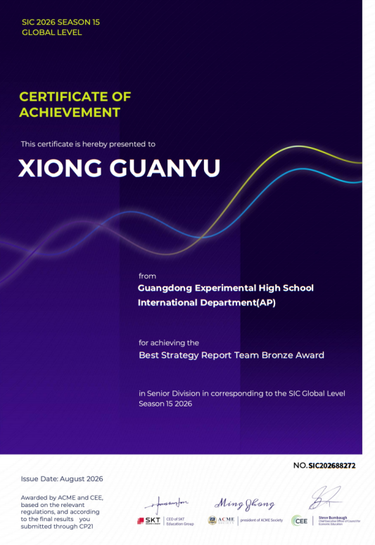
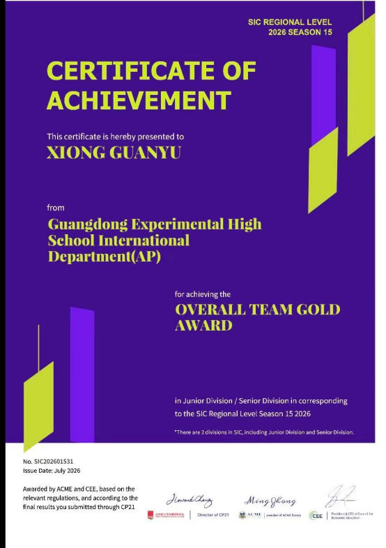
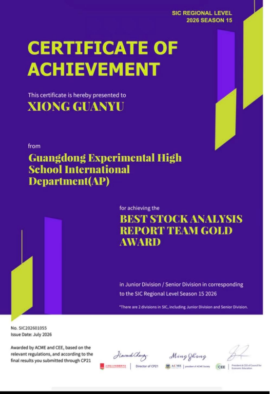
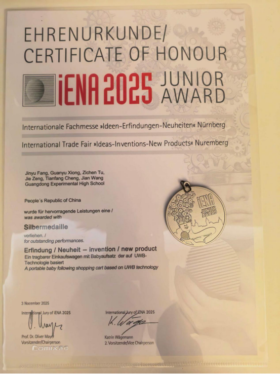
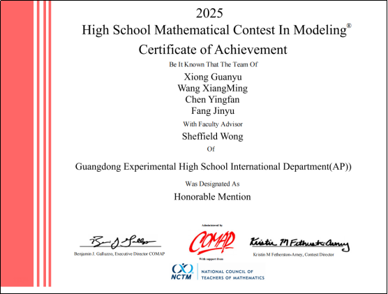
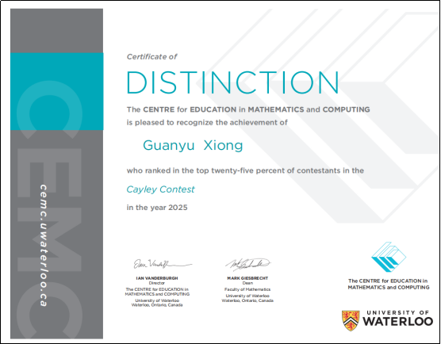
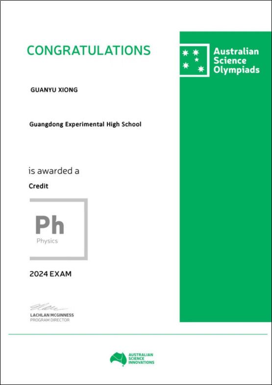
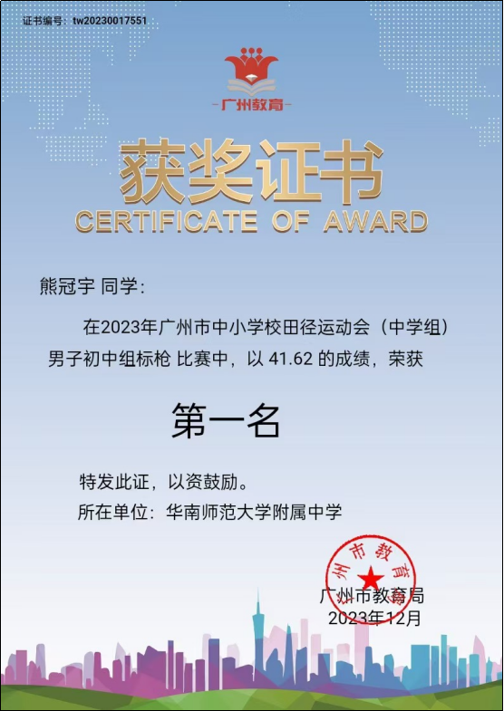
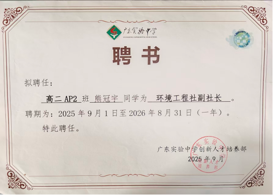

熊冠宇（Jaylen）背景及素材
个人标化成绩：
ap 宏观经济、微观经济、物理1、预备微积分、微积分bc 5分；物理C电磁、物理C力学、CSA、心理学4分。托福112分（阅读28，听力30，口语26，写作28）。sat 8月22日参加考试，分数1440（阅读文法680+数学760）。10月3日sat考试，成绩未出，估分1500+（阅读文法700+，数学800）
主要奖项：
u SIC全国金牌，全球铜牌。
u 纽伦堡发明展全球银牌，作品是：商超复杂环境下自动跟随购物车。冠宇在团队中负责技术部分，技术文档：基于UWB PDOA的商超复杂环境下自动跟随购物车系统设计，在期刊《电子技术与软件工程》上发表。
u HIMCM H奖。
u 九年级获广州市初中生标枪比赛第一名。
还有一些竞赛和活动，可以根据需要选择性加入申请材料：
u 澳洲物理竞赛ASOP奖状证书（全球3等奖）。
u Cayley Contest 数学竞赛 distinction证书。
u 2026年参加CCIR夏校，论文选题：个体估值与集体偏好相悖：K-pop小卡市场作为集体陷阱的实证分析。
u 冠宇从12岁开始，一直坚持每月用零花钱捐款给联合国儿童基金会，每月用自己的零花钱捐款150月，截止到现在，已捐款5年。
u 担任广东省实验中学环境工程社副社长。
u 9年级游泳比赛全校第三名，100米赛跑全校第三名。
u 个人身高192cm，小学和初中阶段一直是校田径队运动员。
对高一成绩下滑补充说明：十年级学生中考录取了广东省实验中学 AP 国际部，开始了寄宿生活。初中时，学习有家长和老师监督提醒，所以成绩一直不错。高中开始寄宿生活，初期不适应自由的寄宿生活，学习没人提醒，导致作业缺交欠交很严重，所以成绩下滑。高二后，学生意识到问题的严重性，自己开发了应用小程序“作业账单”，用于记录作业清单，提醒作业完成情况。所以高二成绩开始回升。同时，学生将小程序“作业账单”分享给了其他容易漏交作业的好友，帮助了大家提高成绩。
另外，冠宇参加社区自愿者活动，教社区的老年人用手机打开医院的小程序挂号，冠宇设计并实现了一款面向老年数字融入情景对比的交互式分支剧情系统――《银发适老：一键温暖》。该系统聚焦城市老年人在智能手机使用中的操作认知障碍、安全焦虑与社会支持薄弱等典型困境，通过同一就医场景下“无适老引”与“有适老引导”两种路径的并置呈现与交互对比，直观验证适老服务对老年人数字生活体验的改善效果。系统采用HTML5与原生JavaScript技术开发，以社会支持理论和增能理论为设计依据，构建了“技术―服务―情感”三维适老框架。在内容制作上，完成了剧本创作、角色与场景设计、分镜头绘制，并借助AI工具（豆包AI、即梦AI、可灵AI）生成动画素材，经剪映专业版后期合成，形成三个独立剧情视频片段。在交互实现上，基于HTML5视频播放的事件驱动机制，实现了“视频播放结束→分支选择浮层弹出→用户选择→动态切换视频源”的闭环交互流程，并集成localStorage数据记录模块，支持操作日志的导出与分析。系统测试邀请10名体验者分别在无适老引导（路径A）与有适老引导（路径B）条件下完成模拟挂号操作体验。测试结果表明：路径B在操作体验、支持体验、安全保障、情感体验及整体满意度五个维度上均显著优于路径A（各维度提升2.3―3.3分，整体满意度从1.8分提升至4.7分）；路径B平均操作耗时较路径A缩短约58%（从8.4分钟降至3.5分钟）。上述结果验证了三维适老框架的有效性，表明本系统作为社区教育工具，能够有效传达适老化设计理念，唤起体验者对老年人数字困境的理解与共情。
AP 物理C力学4分说明：学校课程由于授课时间冲突，十一年级最多只能选择4门AP课程。冠宇选择AP 微积分BC、AP CSA、AP 物理C电磁、AP 心理学。AP 物理C力学选择自学，因为他认为有了十年级AP 物理1 5分的基础，十一年级学习了AP 微积分BC，自己可以拿下物理C力学。所以熊冠宇没有报名物理C力学课程，完全自学，拿了4分。
小学4年级时，冠宇妈妈到美国加州大学戴维斯分校担任访问学者，冠宇跟随到了美国，在戴维斯korematsu小学学习8个月。
暑假两段实习，见附件pdf文档实习证明。
目前联系好的可以写推荐信的老师：升学顾问（Counselor）， AP 宏/微观经济老师（宏/微观经济老师是同一人）， AP 微积分BC老师，自动跟随购物车项目技术指导老师：华南师范大学计算机学院王腾副教授。
所有的项目在冠宇个人主页有详情介绍，代码上传了github

SIC全球铜奖证书

SIC全国金奖证书

SIC全国最佳股市分析金奖

纽伦堡发明展银奖证书、奖牌

HIMCM H奖证书

Cayley Contest Distinction 证书
联合国儿童基金会捐款5年证书

ASOP全球三等奖证书

广州市初中生男子标枪第一名证书

校环境工程社副社长证书